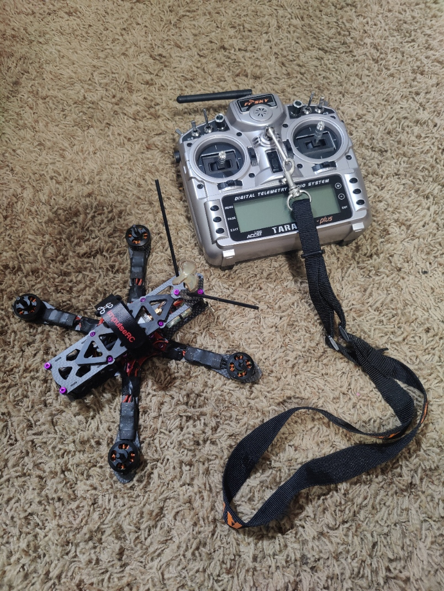

FPV Racing Quadcopter
Project Overview
Designed and built a high-performance FPV racing quadcopter completely from scratch. The build includes custom PCB assembly, flight controller programming, first-person view (FPV) video system, telemetry, and racing-grade components. This project demonstrates advanced skills in electronics, embedded systems, RF communications, and systems integration.
Electronics & PCB Assembly
Flight Controller
- Used name-brand flight controller for main racing quadcopter
- For a separate smaller quadcopter project, designed and built custom flight controller PCB from scratch
- Custom board: Hand-soldered surface-mount components including microcontroller, sensors, and regulators
- Built DIY reflow oven from modified toaster with custom temperature controller
- Implemented precise temperature profiles for solder paste reflow
- Tested and validated all board connections and power distribution on custom build
Power System
- Integrated high-discharge LiPo batteries for racing performance
- Designed custom power distribution board for clean power delivery
- Implemented voltage regulation for 5V and 3.3V systems
- Added battery monitoring and low-voltage protection
- Optimized current paths to minimize voltage drop and heat
Motor & ESC Integration
- Selected and installed brushless racing motors optimized for thrust-to-weight ratio
- Configured Electronic Speed Controllers (ESCs) for rapid response
- Calibrated motor timing and power curves for racing performance
- Implemented OneShot125/DShot protocols for minimal latency
- Balanced propellers and optimized motor mounting for vibration reduction
Flight Controller Software
Firmware Configuration & Tuning
- Main racing quad: Configured and tuned Betaflight firmware for optimal performance
- Custom board (smaller quad): Programmed custom flight controller firmware in C/C++
- Custom firmware: Implemented PID control loops for stabilization (roll, pitch, yaw)
- Custom firmware: Integrated IMU sensor fusion for accurate attitude estimation
- Developed acro mode for racing and rate mode for stability
- Configured failsafe protocols for signal loss scenarios on both builds
Sensor Integration & Calibration
- Integrated 6-axis IMU (gyroscope + accelerometer) for attitude control
- Custom board: Implemented Kalman filtering for noise reduction and sensor fusion
- Calibrated accelerometer and gyroscope offsets on both systems
- Tuned PID parameters for racing performance characteristics
- Optimized sensor sampling rates for real-time performance
FPV Video System
Camera & Video Transmission
- Installed low-latency FPV camera with wide field of view
- Integrated 5.8GHz video transmitter for real-time video broadcast
- Optimized antenna placement for maximum range and signal quality
- Configured video parameters (brightness, contrast, WDR) for varying lighting
- Implemented on-screen display (OSD) for flight data overlay
Ground Station & Headset
- Set up FPV goggles with integrated receiver and monitor
- Configured dual-antenna diversity for improved reception
- Achieved immersive "cockpit view" flying experience
- Added DVR recording capability for flight review
- Tuned frequency channels to avoid interference
Telemetry & Remote Control
Radio System
- Integrated 2.4GHz radio receiver with low-latency protocol
- Configured channel mixing and control curves on transmitter
- Implemented failsafe modes (return-to-home, land, disarm)
- Added auxiliary switches for flight mode selection
- Optimized control feel for racing maneuvers
FrSky Taranis Plus Transmitter Modifications
- Modified FrSky Taranis Plus transmitter for enhanced functionality
- Flashed custom OpenTX firmware for additional features and frequency support
- Hardware modded to access extra frequencies beyond stock configuration
- Swapped out stock gimbals with upgraded Hall effect joysticks for improved precision
- Upgraded joysticks provide smoother control and eliminate potentiometer drift
- Custom firmware allows advanced mixing, scripting, and telemetry features
- Configured custom voice alerts and haptic feedback for flight events
Telemetry Data Link
- Established bidirectional telemetry for real-time flight data
- Transmitted battery voltage, current draw, and GPS position
- Monitored motor temperatures and system health
- Displayed telemetry data on OSD and ground station
- Logged flight data for post-flight analysis
Technical Specifications
- Frame: Custom carbon fiber racing frame
- Motors: High-performance brushless racing motors
- Flight Controller (Main Quad): Name-brand controller with Betaflight firmware
- Flight Controller (Custom Build): Hand-built PCB with ARM Cortex-M microcontroller
- ESCs: 4x 30A+ ESCs with BLHeli_32 firmware
- Battery: 4S-6S LiPo (high C-rating for racing)
- FPV Camera: Low-latency CMOS sensor
- Video TX: 5.8GHz, 25-600mW adjustable power
- Radio: 2.4GHz SBUS/PPM receiver with modified FrSky Taranis Plus
Key Features
- Custom flight controller PCB built from scratch for smaller quadcopter project
- Real-time FPV video with sub-30ms latency
- Racing-tuned PID loops for agile flight characteristics
- Bidirectional telemetry for complete flight monitoring
- Failsafe systems for safe operation
- OSD integration showing battery, flight mode, and warnings
- High thrust-to-weight ratio for acrobatic performance
Challenges & Solutions
One of the biggest challenges was achieving proper PID tuning for stable yet responsive flight. I developed a systematic tuning methodology starting with conservative values and iteratively increasing gains while testing in different flight modes. This required extensive flight testing and parameter logging to analyze oscillations and response characteristics.
Another challenge was managing electromagnetic interference (EMI) between the video transmitter and flight controller. I solved this by implementing proper grounding techniques, using shielded cables for sensitive signals, and physically separating high-power components from sensitive electronics. Adding capacitors to the power lines also helped reduce noise.
Building the DIY reflow oven required precise temperature control to avoid damaging components. I designed a custom PID temperature controller and calibrated the thermal profile multiple times to achieve consistent, reliable results for SMD soldering.
Skills Demonstrated
- PCB design, assembly, and surface-mount soldering
- Embedded C/C++ programming for real-time systems
- Control systems engineering (PID tuning, sensor fusion)
- RF communications and antenna theory
- Power electronics and battery management
- Signal processing and filtering algorithms
- Systems integration and troubleshooting
- DIY tooling and manufacturing processes
Results & Impact
Successfully built and flew a fully functional racing quadcopter with exceptional flight characteristics and FPV capabilities. The project showcases advanced technical skills across electronics, embedded programming, RF systems, and mechanical integration. The immersive FPV experience demonstrates the successful integration of multiple complex systems working in harmony.
This project highlights proficiency in both hardware and software development, with particular emphasis on real-time embedded systems, precision electronics assembly, and systems-level thinking required to integrate multiple subsystems into a cohesive, high-performance platform.